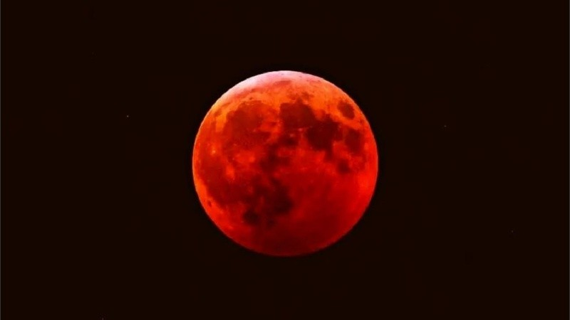
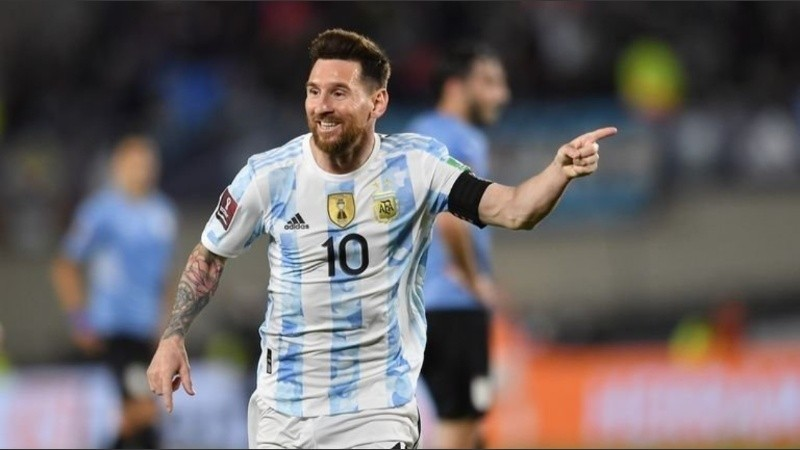
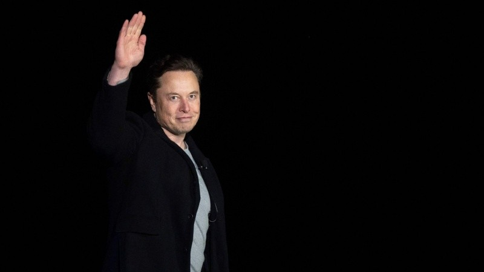

PORTAL DE NOTICIAS

Eclipse total de Luna: un fenómeno único que puede verse este domingo en Rosario

La Luna entrará en la sombra de la Tierra y podrá observarse a simple vista. El Planeta rio Municipal de Rosario y el Observatorio Astronómico de Funes invitan a un evento especial para disfrutar el espectáculo al máximoEntre la noche del domingo 15 de mayo y la madrugada del lunes la Luna entrará en la sombra de la Tierra provocando un eclipse lunar total que será visible en plenitud desde Rosario y todo el país. Desde los observatorios astronómicos de Rosario y de Funes preparan eventos especiales e invitan a participar.
El fenómeno comenzará este domingo a las 23.27 cuando la Luna tenga el primer contacto con la sombra de la tierra. En ese momento dará inicio la fase parcial del eclipse, con la entrada de la Luna en la umbra (la parte central del cono de sombra terrestre).
La Asociación Amigos del Observatorio y Planetario Municipal de Rosario invitan a hacer la previa del eclipse desde las 22.30, con música, proyecciones, charla y miradas al cielo.
Messi se convirtió en el deportista mejor pagado del mundo por segunda vez

El rosarino encabeza la lista Forbes tras su partida del Barcelona con 17 temporadas de éxito y su arribo al PSG con grandes ingresos económicos. Los detallesPor segunda vez desde que irrumpió con su talento en el mundo del fútbol, Lionel Messi encabeza en 2022 el listado Forbes de los deportistas mejores pagados del mundo. Su partida del Barcelona tras 17 temporadas de éxito y posterior arribo al PSG de Francia generaron mayores ingresos para las cuentas bancarios del delantero argentino, de 34 años, lo que le permitió volver a liderar la nómina, tal como ocurriera en 2019.
Según confirmó Forbes, las ganancias brutas (sin el descuento impositivo) del capitán de la selección argentina en el año ascenderán 130 millones de dólares. Esa cifra está compuesta por el contrato que lo une al París Saint Germain (USD 75 millones, 22 menos que lo que percibía la temporada pasada en el conjunto blaugrana), sumado a 55 millones relacionados a los sponsors y venta de imagen, un ítem que creció exponencialmente con su mudanza a Francia. Socios.com, Adidas, Pepsi, Budweiser y Hard Rock Internacional son los convenios comerciales más destacados de su cartera.
Segundo en la lista quedó un ícono de la NBA: LeBron James. La estrella de Los Ángeles Lakers, que no alcanzaron a clasificarse a los playoffs en la presente temporada, sumó 121 millones de dólares. El podio lo cierra otro futbolista: Cristiano Ronaldo. El atacante portugués, de 37 años, regresó al Manchester United y el furor que causó lo empujó a embolsar 115 millones de dólares.
Un caso curioso es el de Conor McGregor. El luchador de artes marciales mixtas encabezó el listado en 2021 con 180 millones, pero 150 de ellos estaban vinculados a la venta su marca de whisky irlandés. En esta oportunidad, quedó afuera del top ten, aunque Forbes advirtió que su nombre aparecerá entre los 50 primeros, cuando dé a conocer el resto de los integrantes en los próximos días.
Combinando los ingresos de los 10 atletas mejores pagados llegan a 992 millones, la tercera cifra más alta desde que la revista confecciona el ranking. Quedó detrás de los 1060 millones de 2018 y de los 1050 de 2021.
Elon Musk suspendió "temporalmente" la adquisición de Twitter por las cuentas falsas

El fundador de Tesla informó que frenó la compra de la red social hasta que no tenga en claro qué porcentaje de los usuarios activos corresponde a spam o usuarios no identificadosEl hombre más rico del mundo, Elon Musk, suspendió de forma temporal la compra de Twitter. El empresario de origen africano había anunciado semanas atrás la adquisición de la red social a cambio de 44 mil millones de dólares, algo que por el momento no se va a concretar.
Según publicó en su usuario personal de Twitter, Musk frenó la compra hasta que la empresa no presente un informe detallado en el que respalden que las cuentas falsas y de spam no representan más del 5% de los usuarios que hay actualmente.
Tras el mensaje de Musk, las acciones de Twitter llegaron a caer hasta un 25% antes de la apertura oficial del mercado en los Estados Unidos. Unas horas más tarde, el empresario envió otro tuit diciendo que "todavía está comprometido" con el acuerdo y las acciones de Twitter recuperaron parte de sus pérdidas, según la agencia Bloomberg.
En sus últimos resultados trimestrales, Twitter informó "que el promedio de cuentas falsas o spam durante el primer trimestre de 2022 representó menos del 5% de nuestros usuarios activos diarios mensuales durante el trimestre".
Sin embargo, Twitter aclaró que aplicó un "juicio significativo" a su última estimación y que el número real podría ser mayor.
Cuando anunció su acuerdo para comprar la compañía el mes pasado, Musk señaló que quería derrotar a los robots de spam, autenticar a todos los humanos y hacer que sus algoritmos fueran de código abierto.